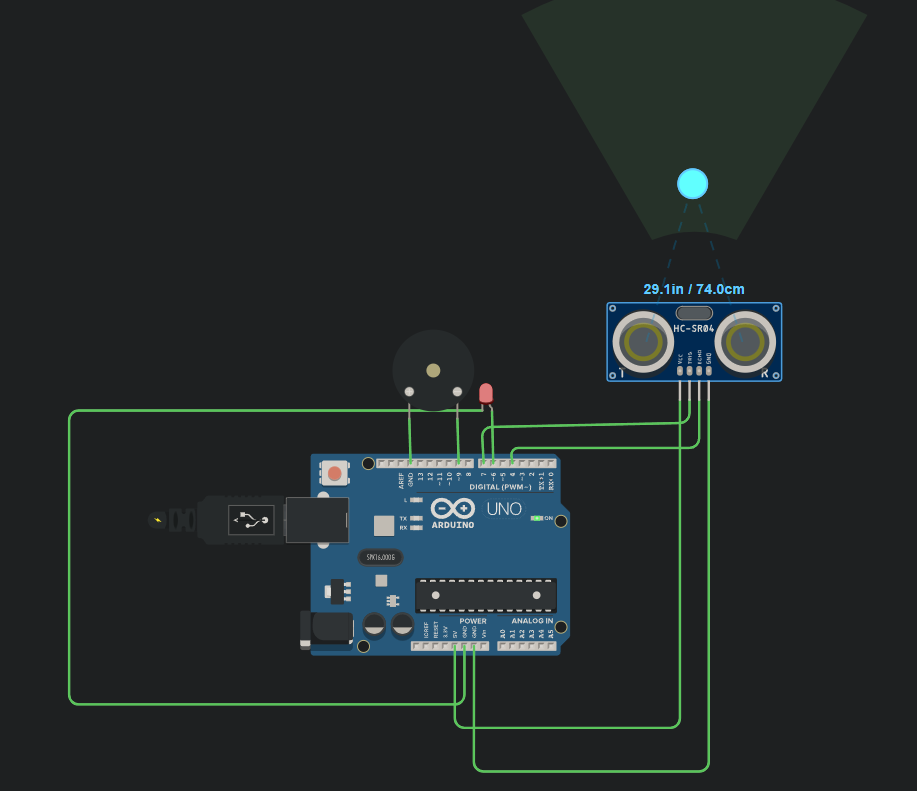
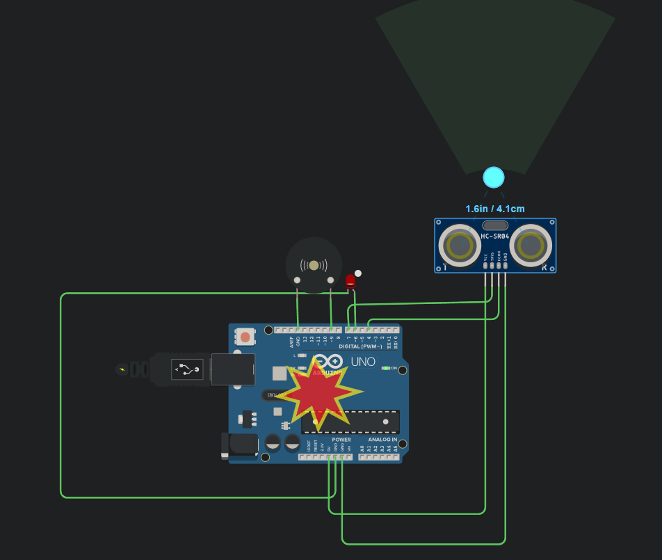

11. Osztály - 1. Félév
-

Elektronika - Mérési jegyzőkönyv
Önreflexió
- Alapvető elektronikai áramkörök és komponensek működésének megértése
- Mérési eredmények pontos dokumentálása
-
 
Mikrovezérlő - Tolatóradar Tinkercadben szimulálva
Önreflexió
- Szenzorok működése
- Az arduinok működése